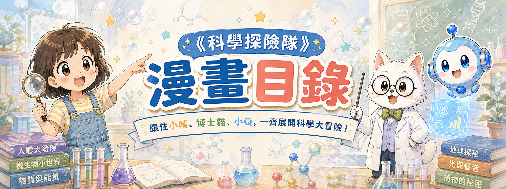

科學
探險隊
✨
首頁
漫畫目錄
角色介紹
科學小知識
溫習筆記
關於我們

我們的漫畫持續更新中！
每集一個科學冒險
目前已更新
EP01–EP27
全系列預計
120集
全部分類
生命與環境
物質與能量
地球與太空
科技與工程
科學探究
人文科番外篇
科學科番外篇
全部季度
第一季
第二季
第三季
第四季
第五季
第六季
第七季
第八季
第九季
第十季
📚 已推出集數
暫時未有符合條件的已推出集數。